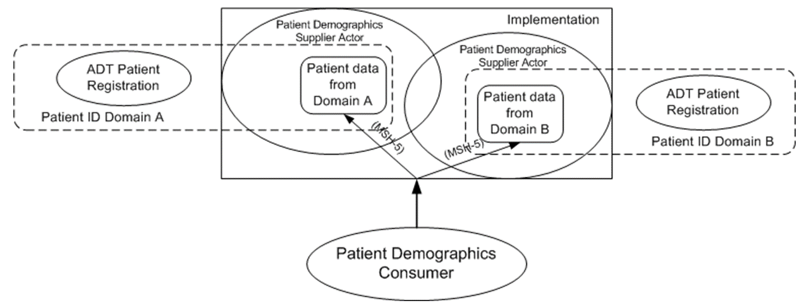

Appendix M: Using Patient Demographics Query in a Multi-Domain Environment
M.1 HL7 QBP^Q22 Conformance Model
The HL7 Find Candidates Query (QBP^Q22) defines a patient demographics query between a client application and an MPI system (HL7 V2.5, Page 3-64). This implies that the server maintains a master record of the patient demographics, but may know a number of patient identifiers from other domains.
In the QBP^Q22 Conformance Statement, QPD-8 (What Domains Returned) is defined as “the set of domains for which identifiers are returned in PID-3” (HL7 V2.5, Page 3-66, second table). Note that this field does not cite “demographics information in some domains”, but about “identifiers issued in some domains”, and explicitly specifies that these identifiers are returned in PID-3 (Patient ID List).
In the example following the Conformance Statement in HL7 2.5, three patient records are included in the query response; each returned patient record includes two identifiers in PID-3 (domains METRO HOSPITAL and SOUTH LAB) as requested in the query. However, one set of demographic information is returned in the remainder of the PID segment. The example does not illustrate or assume a mechanism for returning multiple sets of demographic information.
Thus it appears that QBP^Q22 is not intended to provide a way to issue a single query for patient demographics maintained in multiple different patient registration systems (domains).
M.2 IHE PDQ Architecture
In the PDQ Integration Profile, the supplier is characterized as a Patient Demographics Supplier. The supplier is not assumed nor required to be an MPI system. It may be holding information from only a single patient identification domain, or may instead hold information from multiple identification domains.
The latter case would apply if, for example, the Patient Demographics Supplier is grouped with an actor accepting ADT feeds from multiple patient registration systems in different domains. Equivalently, the Patient Demographics Supplier (or some other actor with which it is grouped) may manage a set of patient demographics sources, but is not expected to cross-reference them (as a PIX Patient Identifier Cross-reference Manager or an MPI system). A conceptual model embracing both multi-domain concepts is shown in the following picture.
Figure M.2-1: Patient Demographics Supplier in a Multi-domain Environment
Because of the definition of QBP^Q22, it must be determined which patient demographics source a QBP^Q22 query is asking for, before any processing of the query request can proceed. The identification of a need for such determination is the key difference between the IHE PDQ transactions and the original HL7 QBP^Q22 definitions.
Three obvious alternatives exist for determining the patient demographics source.
- The supplier advertises different application entities for each of the patient demographics sources it manages. By addressing its query to a particular application entity in MSH-5-Receiving Application , the consumer explicitly selects a source it is asking for.
- The consumer is required to populate PID-3.4 in QPD-3 (Query Parameter) with the domain name administered by the corresponding source (patient identifier domain) it is asking for.
- The consumer includes in QPD-8 (What Domains Returned) the domain name of the corresponding patient information source it is asking for.
In selecting among these alternatives for the PDQ Profile, IHE-ITI took into account the need to constrain the current HL7 QBP^Q22 definition while maintaining the integrity of the HL7 standard query and at the same time to model the PDQ Profile properly to satisfy its real-world purpose. Based on these considerations, alternative 1 is the best selection, although alternative 2 is acceptable. Alternative 3 is not acceptable because it violates the definition of QPD-8 that is stated in the HL7 Standard.
M.3 Implementing PDQ in a multi-domain architecture
There are three possible approaches in using PDQ in a multi-domain environment:
- Group the PDQ Patient Demographics Supplier with a PIX Patient Identifier Cross-reference Manager. This allows the use of QPD-8 to request patient identifiers from other domains to be returned in the demographics query response to the PDQ Patient Demographics Consumer.
- Group the PDQ Patient Demographics Supplier with a PIX Patient Identifier Cross-reference Consumer. This allows the use of QPD-8 to request patient identifiers from other domains to be returned in the demographics query response to the PDQ Patient Demographics Consumer.
- Group the PDQ Patient Demographics Consumer with a PIX Patient Identifier Cross-reference Consumer. This obliges the Patient Demographics Consumer to use separate query requests to obtain patient demographics information (PDQ Query) and patient identifiers from the domains in which it is interested (PIX Query).
Approach 3 is not recommended if Approach 1 or 2 is feasible. To require the Patient Demographics Consumer to issue a separate PIX query increases complexity and might not be permissible in the actual implementation architecture.
When Approach 1 or 2 is implemented, QPD-8 may be used by the Patient Demographics Consumer to ask for patient identifiers from the single domain used to identify patients in the Affinity Domain. The patient demographics information returned comes from the patient demographics source that is associated with MSH-5-Receiving Application ; the patient demographics source may or may not be associated with the patient identifier domain.
In Approach 2, note that the PDQ Patient Demographics Supplier is grouped with the PIX Patient Identifier Cross-reference Consumer. This combined actor will use a PIX query to satisfy the request of the client from additional patient identifiers and return them in PID-3.